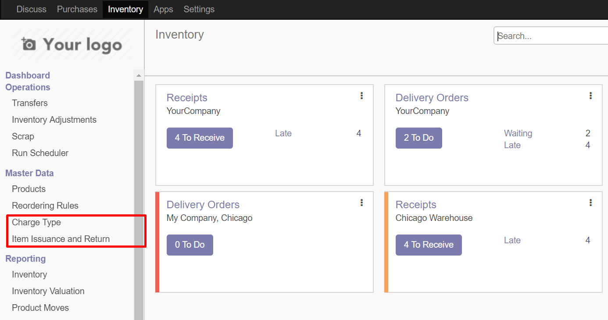
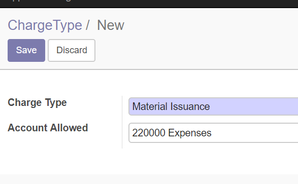
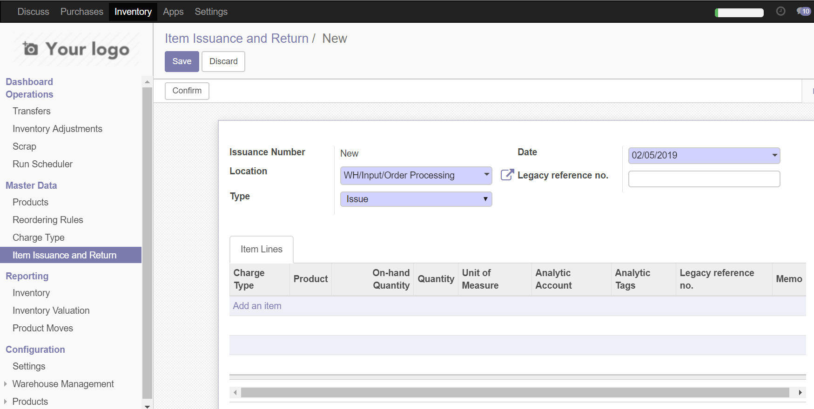
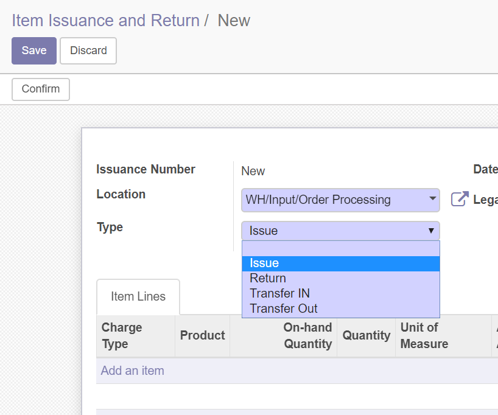
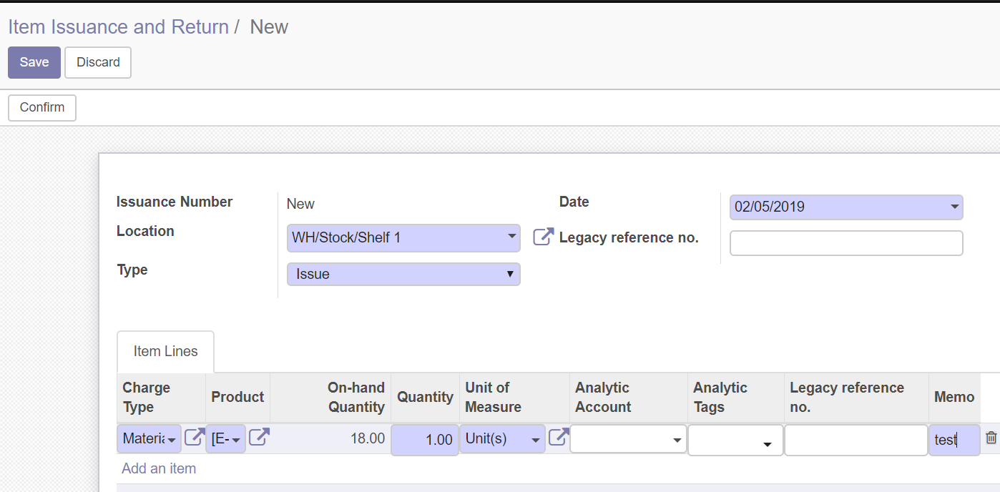
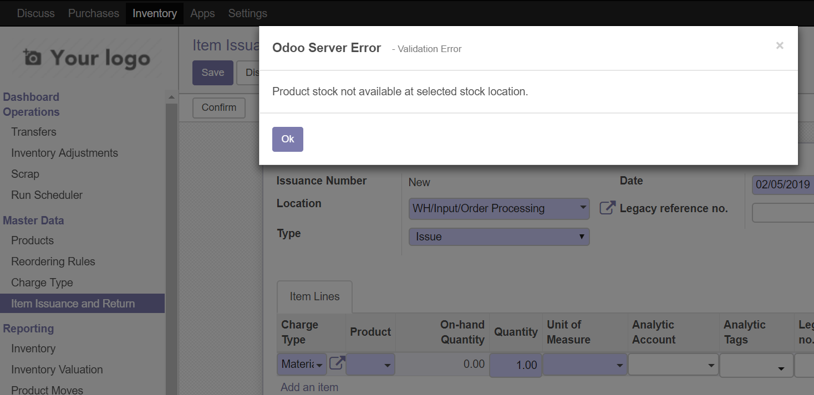
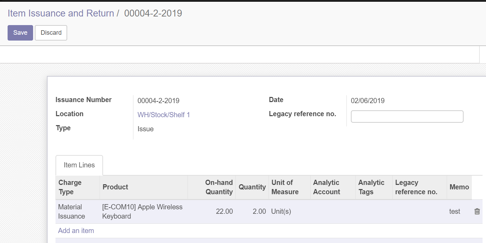
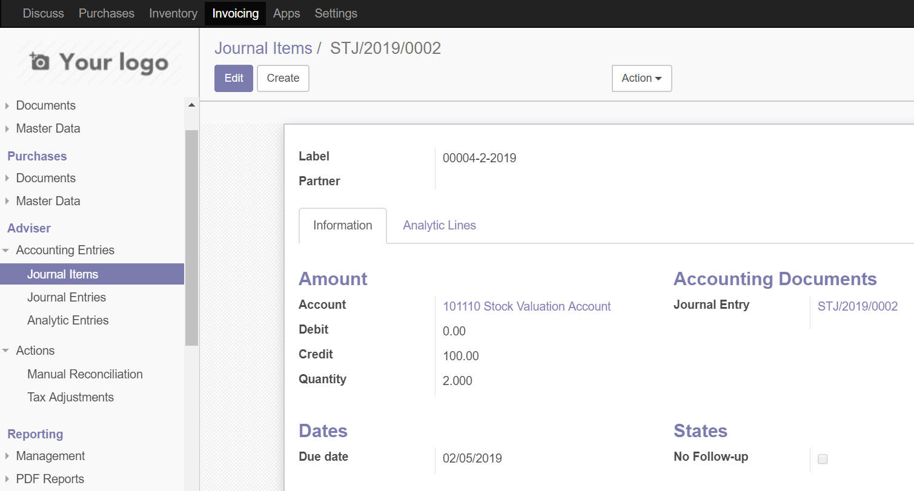
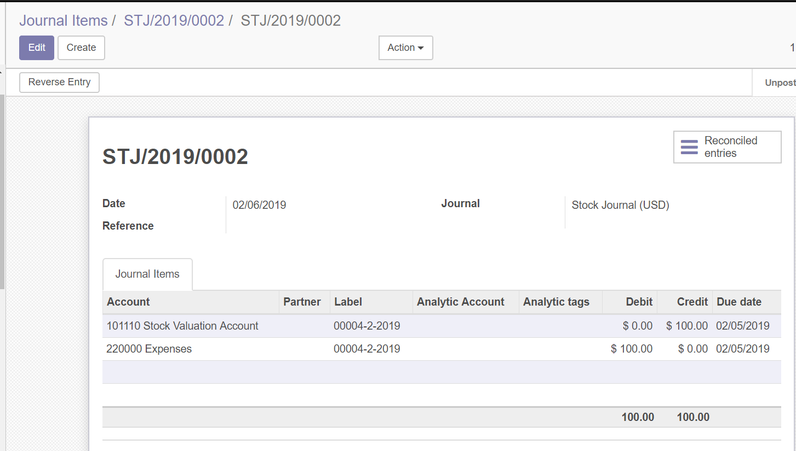

Item Issuance and Return
This module enables users to issue item and return items and charge consumption without requiring to go through all the manufacturing process.
When items are issued, the quantity of item issued is decreased from the inventory and the corresponding Journal Entry is auto created.
When the item is returned, the quantity of item returned is added to the inventory of that item and the corresponding Journal entry is auto created.
In addition to this, an option of charge type exists so that debit or credit account for the GL entry can be selected on it and when issue / returning the item, just selecting charge type would create a Journal entry accordingly
After installation of the module, the following additional menu items appear in the inventory menu

In charge type menu, create a charge type and select he appropriate GL account to be debited in case of item issuance and credited in case of item return

In the Item issuance form, select Location, issuance type and Reference number (if any)

The "type" includes the following options

Select the product, charge type and quantity for issuance

Error if product is not available in the location

After the entry is done, as shown below, GL entry is auto generated and stock quantity auto decreased

GL ENTRY Page

GL ENTRY (The label shows the Item issuance sequence number)
The account credited in this case is the inventory valuation account given on the product page

PLEASE NOTE THAT "INVENTORY VALUATION METHOD" ON "PRODUCT CATEGORIES" PAGE SHOULD BE SET TO "AUTOMATIC" FOR THIS MODULE TO WORK AS STATED